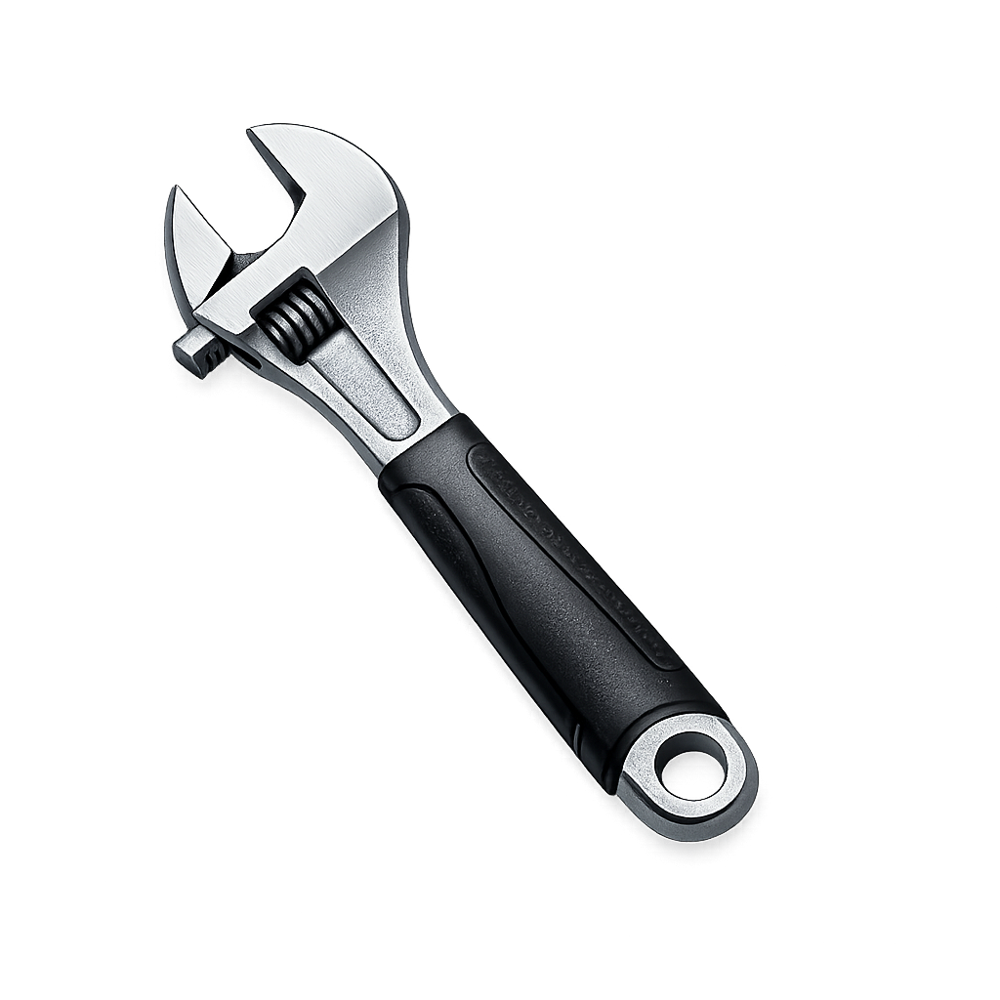
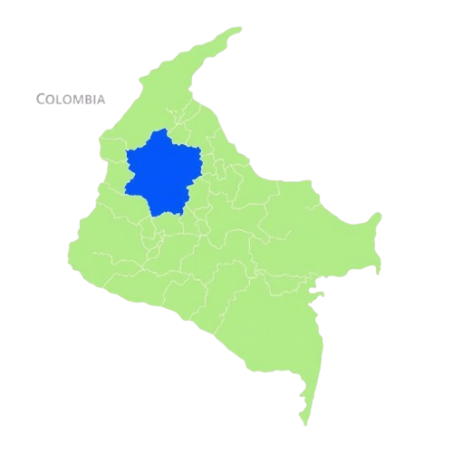

Sobre nosotros
Maestro de obra con experiencia en construcción, remodelaciones y acabados. Según el tipo de proyecto se trabaja con oficiales y ayudantes para garantizar un trabajo bien realizado y entregado a tiempo.

Obra civil, remodelaciones y acabados profesionales en Medellín y sus alrededores.
Más de 6 años de experiencia garantizando calidad y cumplimiento.
Solicitar cotizaciónMaestro de obra con experiencia en construcción, remodelaciones y acabados. Según el tipo de proyecto se trabaja con oficiales y ayudantes para garantizar un trabajo bien realizado y entregado a tiempo.
Brindar servicios de construcción y remodelación con altos estándares de calidad, responsabilidad y cumplimiento, garantizando la satisfacción de cada cliente.
Ser reconocidos en Medellín y sus alrededores como una empresa confiable y profesional en servicios de construcción y remodelación destacándonos por nuestros acabados finos y compromiso real en cada proyecto.
Casas, apartamentos y obra civil desde cero.
Cocinas, baños, ampliaciones y modernizaciones.
Porcelanato, enchapes, pintura y detalles finos.
Electricidad básica, plomería, servicios de asistencia y reparaciones hogareñas

Nos comprometemos a realizar cada proyecto con responsabilidad, materiales adecuados y acabados de calidad.
Todos nuestros trabajos cuentan con garantía sobre la mano de obra, brindando tranquilidad y confianza a nuestros clientes.
Algunos de nuestros proyectos realizados


★★★★★
"Excelente servicio, muy cumplidos y el trabajo quedó hermoso. Totalmente recomendados."
— Lina B.
Cliente satisfecho
★★★★★
"Gran trabajo 👏 se nota la responsabilidad, experiencia y compromiso."
— Nazaret V.
Cliente satisfecho
★★★★☆
"Buen trabajo y buena atención. Quedé satisfecha con el resultado."
— Yeraldín G.
Cliente satisfecho

También realizamos trabajos en municipios cercanos del Valle de Aburrá y otras zonas de Antioquia según el proyecto y la disponibilidad
WhatsApp: 315 750 3478
Ciudad: Medellín y alrededores
Visita nuestra página de facebook Escribir por WhatsApp